远程实验平台环境图形化调试指南(二)——系统调用¶
这部分深入介绍了VSCode图形化界面GDB调试系统调用的过程，涉及到了page table的部分内容以及汇编代码，虽然有些晦涩难懂，但如果想要深入了解整个系统调用的过程，这些都是要掌握的必不可少的知识点。下面以ls.c文件中的fstat系统调用执行过程为例，采用GDB调试分析ecall指令前后的系统调用过程，供同学们进行参考。
为了给同学们演示如何用VSCode图形化调试XV6系统调用的过程，在VSCode图形化调试指南（一）里的两个视频之后，我们再录制了2个演示视频：
- 【3. VSCode调试系统调用过程（包含pagetable和汇编）】 https://www.bilibili.com/video/BV12P411J7xq?share_source=copy_web&vd_source=a822dcda3537564ccdd0bb45aa0afe33
- 【4. VSCode调试系统调用——从内核到用户，再从用户返回内核】 https://www.bilibili.com/video/BV1ug411m7ir?share_source=copy_web&vd_source=a822dcda3537564ccdd0bb45aa0afe33vd_source=a822dcda3537564ccdd0bb45aa0afe33
1. ECALL指令之前的状态¶
首先，参考用户态程序调试从内核进入用户空间的user/ls.c。
在第38行打上断点。
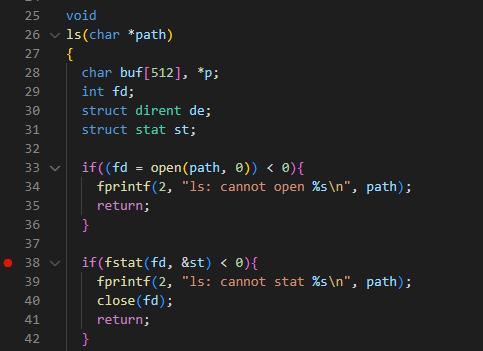
点击“运行”，程序将自动运行到第38行并停止：
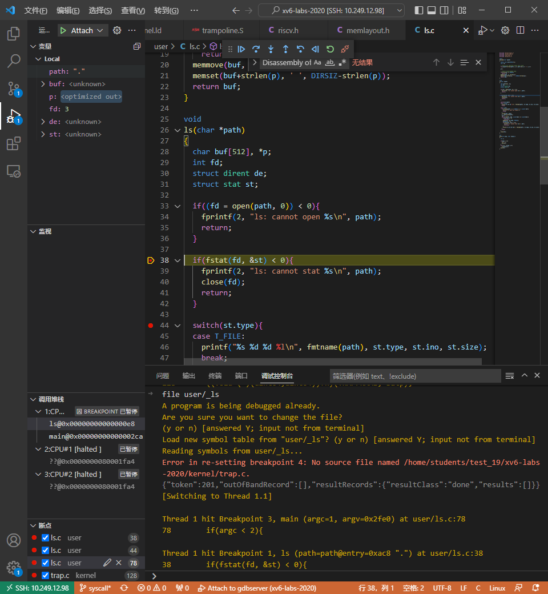
在调试控制台输入display/10i $pc，让gdb持续自动显示从pc起的10条指令。

在user/ls.asm反汇编文件中，可以看到ecall指令汇编地址是0x59c。

接着，输入b *0x59c在ecall指令上打断点。再点击“运行”，程序自动停在了ecall指令那一行上。
或者，也可以连续多次输入si（stepi命令），单步执行每一条汇编指令，直到程序停止ecall指令处。

我们还可以输入info reg打印全部32个寄存器的值

我们需要关心的是a0、a1寄存器，ls程序传递给fstat系统调用的参数。其中，a0是fd文件描述符，a1是要获取stat结构体信息的指针。
此时，我们也可以通过输入print/x $satp或者p/x $satp查看satp寄存器（页表所在的物理地址）。
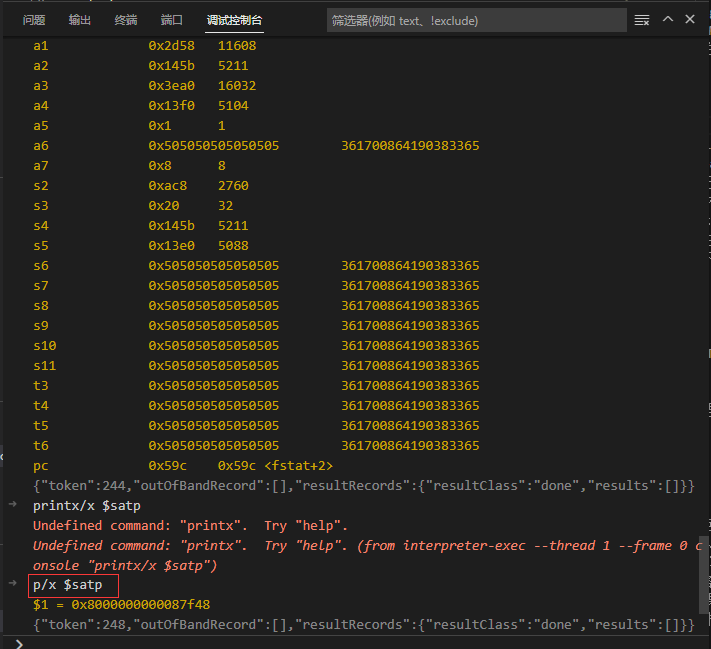
satp寄存器给出的物理内存地址是0x8000000000087f48。
如果想进一步查看page table的映射关系，在QEMU界面中（注意，是在终端，不是在调试控制台），输入ctrl a + c就可以进入QEMU的console，之后再输入info mem。
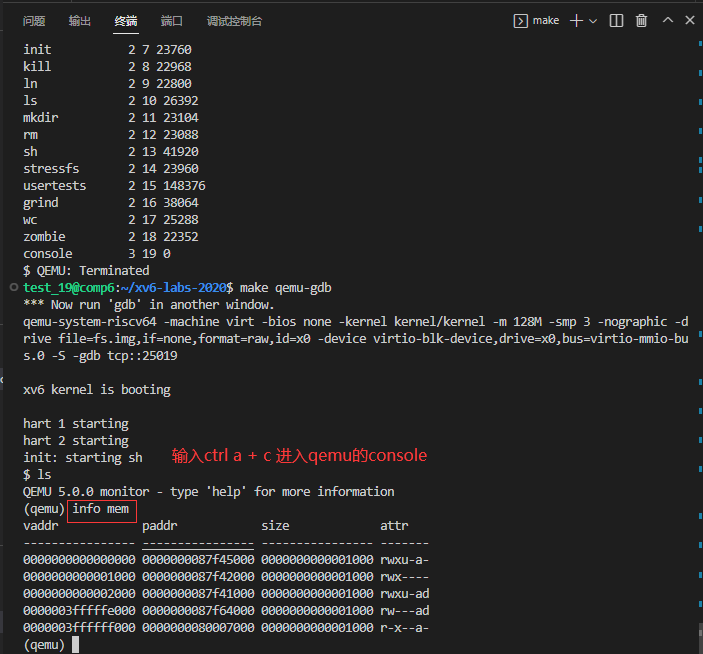
上面打印出来的是用户程序ls的page table，非常小，只包含了5条映射关系。
page table拓展知识
在上图中，attr是PTE（页表，Page Table Entry）的标志位。
r：Readable，可读w：Writable，可写x：Executable，可执行u：User，表明PTE_u标志位是否被设置，用户代码只能访问u标志位设置了的PTE。也就是如果有这个标志位，则说明这个page可以被运行在用户空间的进程访问。a：Accessed，表明这条PTE是否被使用过。g：Globald：Dirty，表明这条PTE是否被写过。
最后两条PTE的虚拟地址非常大（接近虚拟地址的顶端），它们分别是trapframe page和 trampoline page（详见xv6 book P24-26）。这两个PTE没有u标志位，用户代码不能访问它们。当进入supervisor mode时，才能够访问。可能有同学注意到，第二条PTE也没有u标志位，这是一个无效的page（guard page），以防止用户程序尝试使用过多的stack page。
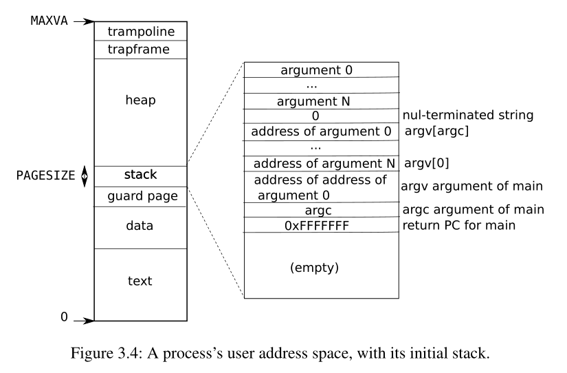
我们在kernel/memlayout.h头文件中，也可以看到trapframe的定义。
// map the trampoline page to the highest address,
// in both user and kernel space.
#define TRAMPOLINE (MAXVA - PGSIZE)
PGSIZE和MAXVA的定义在kernel/riscv.h。
#define PGSIZE 4096 // bytes per page
// one beyond the highest possible virtual address.
// MAXVA is actually one bit less than the max allowed by
// Sv39, to avoid having to sign-extend virtual addresses
// that have the high bit set.
#define MAXVA (1L << (9 + 9 + 9 + 12 - 1))
这样，就能计算出TRAMPOLINE的地址是1<<38 - 4096 = 0x3ffffff000，这个地址和上面用info mem命令查到的最后一条PTE是一样的。也就是，最后一条PTE正是TRAMPOLINE。
2. ECALL指令之后的状态¶
为了能够让程序停留在trampoline.S的userver段的第一条指令，我们可以在0x3ffffff000地址上打上断点。
在调试控制台上输入b *0x3ffffff000。
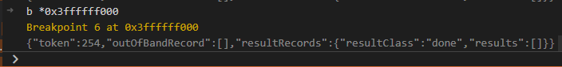
点击”运行“，或者输入si单步执行ecall指令。

从这里可以看到，已经进入了trampoline。
此时，我们在QEMU的console，之后再输入info mem。

可以看出，page table并没有发生改变，也就是说ecall并没有切换page table。
继续观察uservec汇编代码，里面有很多sd指令，用来保存用户寄存器，这些指令比较无趣，暂时不管它们（后面我们还会回来分析的:-）。我们先看在第76-85行，通过阅读注释了解到，在准备跳入usertrap()之前，需要先切换kernel page。
76 # restore kernel page table from p->trapframe->kernel_satp
77 ld t1, 0(a0)
78 csrw satp, t1
79 sfence.vma zero, zero
80
81 # a0 is no longer valid, since the kernel page
82 # table does not specially map p->tf.
83
84 # jump to usertrap(), which does not return
85 jr t0
接下来，我们将断点打在0x3ffffff08e地址上，也就是让程序停留在跳入usertrap()之前。
如何知道第85行jr t0语句的地址是0x3ffffff08e？
在调试控制台，输入x/40i $pc显示当前PC后面的40条指令，就可以看到jr t0对应的地址。
也可以通过查看kernel.asm反汇编文件，在0000000080007000 <_trampoline>:段，可以看到jr t0相对uservec第一条指令位置偏移了0x8e，将0x3ffffff000 + 0x8e，就是0x3ffffff08e。
输入b *0x3ffffff08e
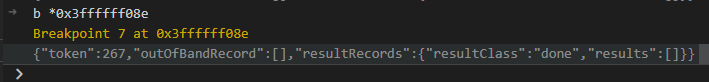
点击”运行“。
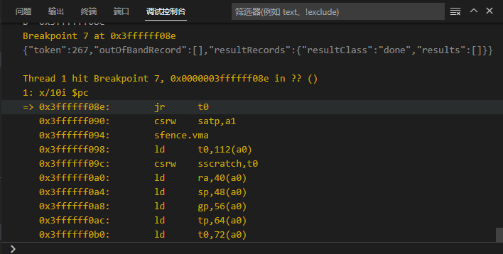
在跳转到内核C语言代码运行之前，加载kernel的调试符号，输入file kernel/kernel

接着，输入si单步执行汇编指令。

可以看到已经进入了trap.c的usertrap函数中了。
此时我们再观察page table，在qemu控制台输入info mem
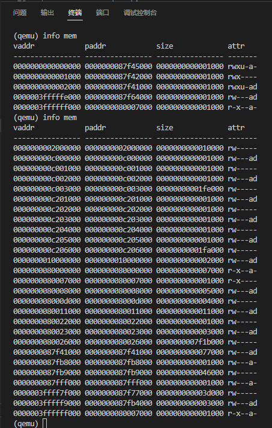
可以看出与之前的page table不一样了，已经从user page table切换到了kernel page table，说明已经准备好了执行内核中的C代码了。
trampoline拓展知识
注意观察的同学可能已经发现了，user page table和kernel page table的trampoline page的映射是完全一样的（虚拟地址都是0x3ffffff000），因此我们在切换page table时，寻址的结果不会改变，否则当trampoline切完页表就可能因找不到指令而崩溃了。这也正是trampoline page的特殊之处。
trapframe拓展知识
可能还有同学注意到，user page table中倒数第二个PTE的vaddr（虚拟地址：0x3ffffffe00）也是比较大。它是由kernel设置好的映射关系，用于指向一个可以用来存放每个进程的用户寄存器的内存位置（如果你想查看xv6在trapframe page中存放了什么，详见proc.h的trapframe结构体）。在内核切换用户空间时，内核会执行set sscratch指令，将SSCRATCH（Supervisor Scratch Register）寄存器的内容设置为0x3ffffffe00，也就是trapframe page的虚拟地址。在运行用户代码时，SSCRATCH寄存器保存的就是指向TRAPFRAME的地址。
那为什么内核要保存这些用户寄存器呢？
是因为内核即将要运行会覆盖这些寄存器的C代码。当从内核再次切回至用户空间时，如果要想正确恢复用户程序，则需要将用户寄存器恢复成在ecall指令执行之前的状态。因此，需要将所有的寄存器都保存在trapframe中，这样才能在之后恢复寄存器的值。
小结
通过上述分析可知，是通过ecall指令走到trampoline page，那ecall指令都做了什么事情呢？实际上，ecall只会改变三件事情（都是硬件来做的）：
- ecall将代码从user mode改到supervisor mode，即更新CPU中的mode标志位位supervisor。
- ecall将程序计数器的值保存在SEPC（Supervisor Exception Program Counter）寄存器，就是ecall指令在用户空间的地址。在usertrap函数中，再将SEPC寄存器的值保存到
trapframe的epc里面。
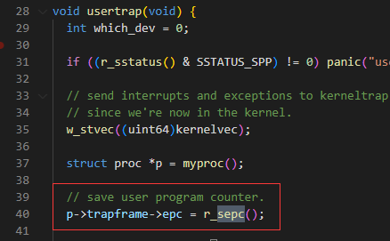 - ecall会跳转到STVEC（Supervisor Trap Vector Base Address Register）寄存器指向的指令。STVEC寄存器是在usertrapret函数（位于trap.c中，这个函数完成了部分方便在C代码中实现的返回到用户空间的工作）中被设置为
TRAMPOLINE + (uservec - trampoline)，即0x3ffffff000，这就是执行ecall指令之后下一条指令所在的位置。也就是，在进入用户空间之前，内核会将trampoline page的地址存在STVEC寄存器中。
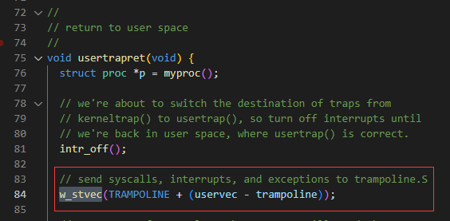
而在ecall之后，在执行内核中的C代码之前，接下来还有一些工作是汇编来做的：
- 保存32个用户寄存器，这样当从内核态返回用户态时，才能恢复这些寄存器的内容。
- 从user page table切换到kernel page table，也就是找到
kernel satp。 - 将sp（Stack Pointer）寄存器指向
kernel stack，这样才能给内核C代码提供栈。
其中，kernel satp和kernel stack是在usertrapret函数中设置好的，即之前内核在进入用户空间时就设置好的。
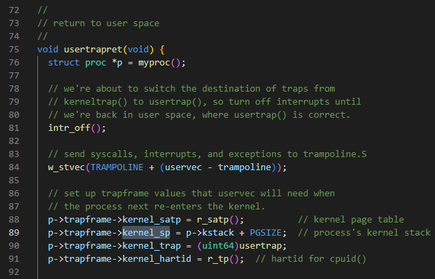
之后，才能跳转到内核中C代码的usertrap函数中。
3. 汇编之后的C代码¶
自从见到了usertrap，我们就已经进入了C语言的世界，相比上述汇编代码来说，少了很多晦涩难懂的地方，是不是觉得生活更加美好了呢: )
从前面实验原理的部分，我们已经知道，有很多原因都可以让程序进入usertrap函数中来。对于本实验来说，我们更关心的是系统调用的过程代码，那么我们可以在第67行syscall();打上断点，点击“运行”，让程序停留在syscall()函数。当然，喜欢探索的同学也可以深入分析usertrap()函数的执行流程。
接着进入syscall.c文件中的syscall()，那么同学们就可以愉快地进行调试分析后面的代码吧。
4. 一个简单的从用户到内核空间的调试方法¶
有同学可能问，能不能跳过汇编代码，直接打打断点到C代码呢？答案是可以的。下面还是以ls中的fstat系统调用为例，介绍一个较为简单的调试步骤：
Step1： 先在终端输入“make qemu-gdb”。
接着，按下F5， 或者 点击左侧按钮运行与调试，并点击左上角绿色三角（Attach to gdb)。
再点击“运行”，让xv6正常运行，直到出现“$”，表示已经进入shell中。
Step2： 在调试控制台，输入“interrupt”。
Step3： 在kernel/trap.c:128处打断点，继续点击“运行”。
Step4： 在xv6的shell中输入ls，以启动ls程序；程序停留在kernel/trap.c:128处。
Step5： 接下来，我们需要在调试窗口左下角删除原有的内核态断点，并通过调试控制台，加载ls的调试符号。在其中输入file user/_ls。
Step6： 打开user/ls.c文件，找到main()函数，在第78行打上断点。点击“运行”。
Step7： 在ls.c第38行打上断点，点击“运行”，让程序停留在执行fstat系统调用的地方。
Step8： 在调试控制台，输入file kernel/kernel，加载kernel的调试符号。
Step9： 在syscall.c文件中第138行syscall();打上断点，点击“运行”，让程序停留在syscall()函数。
Step10： 接下来，你就可以根据需要来调试你想要分析的代码吧。